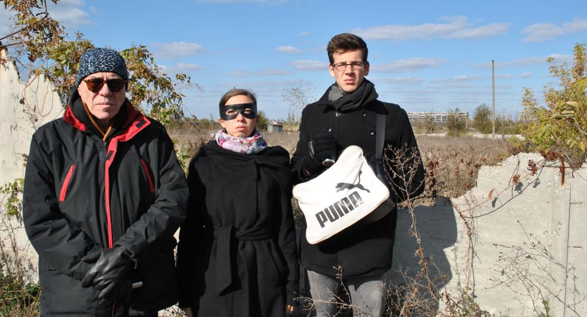
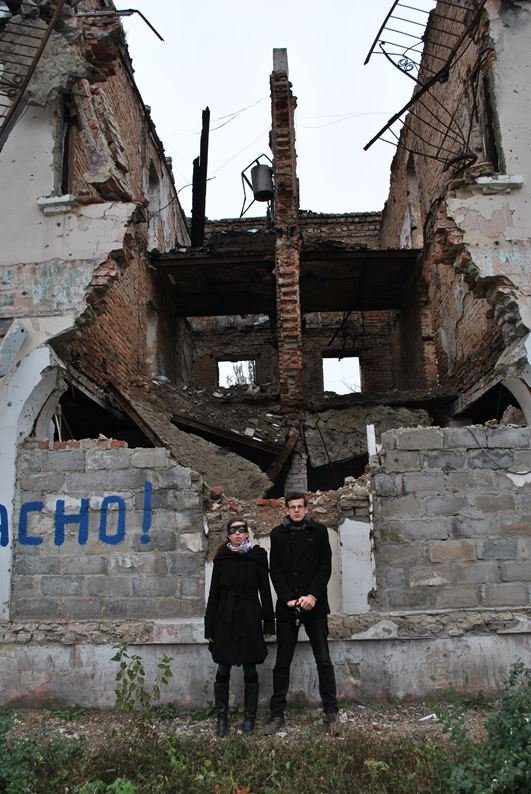
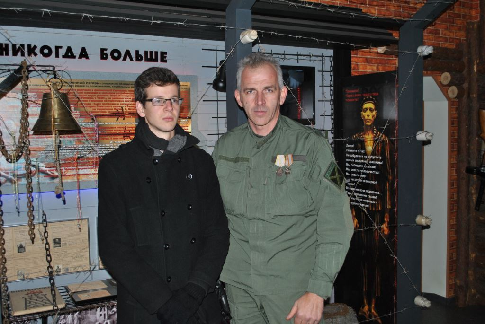
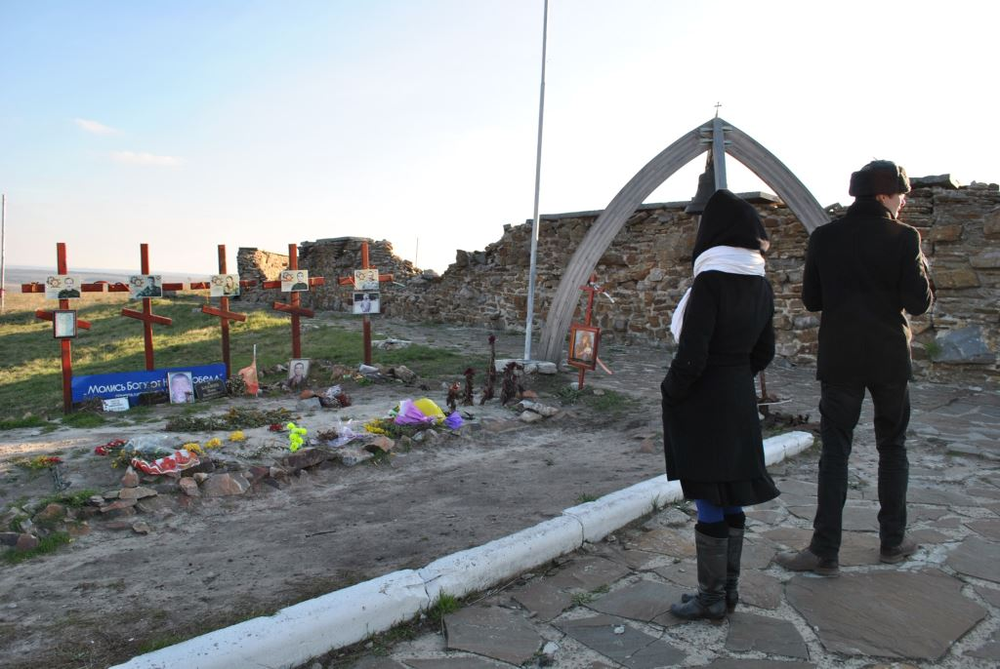
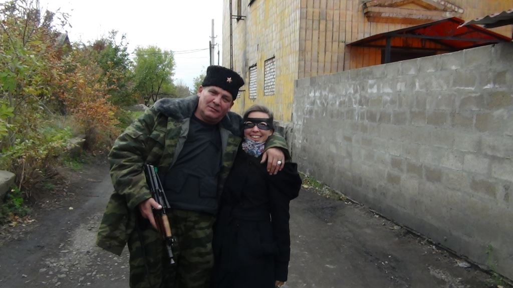
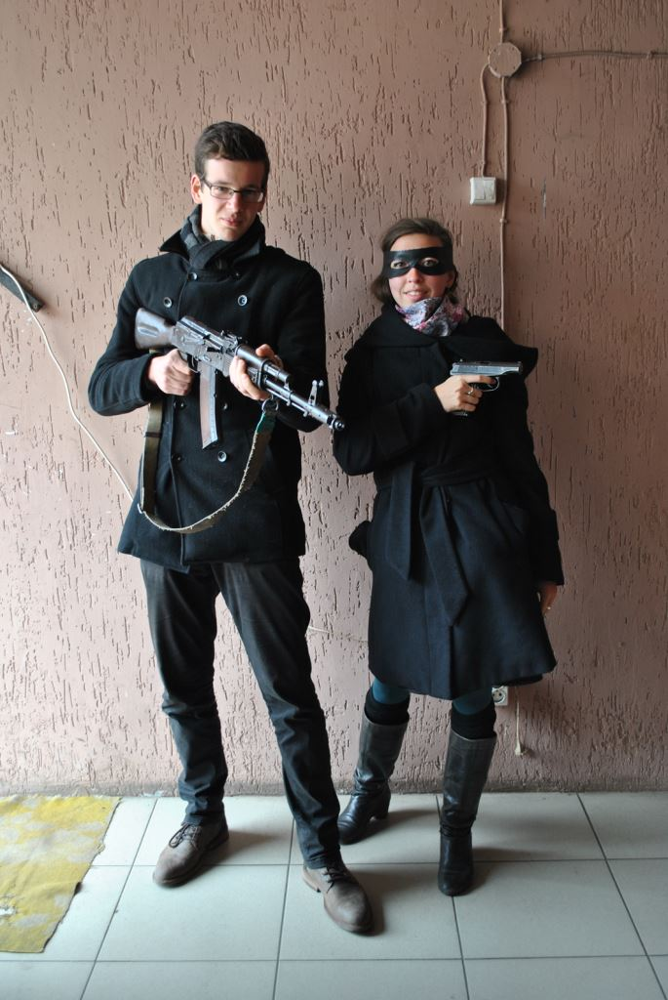

Nous avons décidé de venir au Donbass pour rencontrer l’un des seuls peuples qui défend encore sa liberté contre l’impérialisme américain, car, d’une autre façon, c’est aussi le combat que nous menons.
Que saviez-vous sur le Donbass avant votre visite ?
Pas grand-chose en réalité, si ce n’est que cette région se battait pour son indépendance contre l’impérialisme américain et avec le soutien de la Russie – ces éléments nous ayant déjà suffisamment motivé pour venir sur place.
Comment pouvez-vous décrire la ville de Donetsk en quelques mots pour des gens qui ne l’ont jamais vu ?
C’est une ville assez moderne où l’on peut voir quelques buildings mais aussi des bâtiments typiquement staliniens. Cependant, il y a de nombreux espaces verts et parcs pleins de fleurs, qui doivent être magnifiques lorsque tout a éclos. On peut comprendre pourquoi Donetsk s’appelle la « ville aux millions de roses ».
Le paysage est assez plat. Le seul relief qu’il peut y avoir est formé par les « terricônes », collines pointues nées de l’industrie minière très présente au Donbass.
Qu’avez-vous pensé votre visite à l’Université Nationale Technique de Donetsk ?
C’était sympathique de voir des jeunes étudiants qui apprennent le français à l’autre bout du continent ! Et ensuite, cette visite nous a permis de découvrir un aspect de la vie à Donetsk (en l’occurrence la vie d’une université), qui a l’air de se dérouler normalement malgré la guerre !
Nous avons aussi été étonnés que malgré tout, des échanges avec des universités françaises ont toujours lieu.
Quelles sont vos impressions après la visite des quartiers bombardés de Donetsk et d’Uglegorsk ?
Ce que l’on retient surtout après la visite de ces quartiers bombardés, c’est que ce sont des zones exclusivement civiles, ne comportant aucune infrastructure militaire. Sachant que le Donbass faisait partie de l’Ukraine il n’y a que quelques années, le plus choquant est d’en déduire que le gouvernement de Kiev bombarde en réalité son propre peuple, et qu’il vise particulièrement des lieux comme les écoles, les orphelinats, les hôpitaux, les gares routières ou les marchés et les supermarchés.
Nous avons été étonnés de voir des gens continuer de vivre dans les quartiers bombardés, dans des maisons qui, pour certaines, ne sont plus que des ruines. La plupart n’ont presque plus rien pour vivre, mais comme nous avons pu le voir ils gardent leur dignité et leur sourire. Cette ténacité, mais aussi cette générosité qu’ils rayonnent, nous rendent honteux de vivre comme nous vivons dans nos pays embourgeoisés et sécuritaires.
À vrai dire, en ce qui nous concerne, nous sommes sortis de ces visites encore plus motivés et convaincus de la justesse du combat que nous menons contre l’ordre mondial américain, à travers les Brigandes et notre alternative clanique communautaire.
Savoir que nos gouvernements occidentaux soutiennent ces bombardements de civils, dont le seul crime est d’être né dans un peuple qui a dit non au système mondialiste, n’a fait que renflammer notre détermination et notre révolte.
Notre démarche de vie, ici en France, était déjà basée sur un rejet de la société bourgeoise individualiste – elle n’en est que renforcée après ce que nous avons vu !
Qu’avez-vous découvert lors des visites de muséums ?
Nous avons visité plusieurs musées faisant le parallèle entre la Seconde Guerre Mondiale, « la Grande Guerre Patriotique » des Russes, et la guerre actuelle.
On nous a expliqué qu’au début de la guerre du Donbass, les séparatistes pro-russes qui n’avaient pas d’armes allaient en chercher dans les musées dédiés à la Seconde Guerre Mondiale, et que celles-ci fonctionnaient toujours !
Nous avons aussi vu dans ces musées des écussons américains ou des sachets de nourriture de l’US Army ramassés lors de la prise de l’aéroport de Donetsk, preuves que des américains étaient venus se battre du côté ukrainien contre les séparatistes pro-russes. Dans ces objets, on a pu aussi voir un manuel de la Bundeswehr, l’armée allemande...
Ensuite, nous avons aussi visité un musée en l’honneur de la Jeune Garde, ces résistants d’entre 14 et 22 ans lors de l’occupation nazie. Nous étions surpris du nombre élevé de ses membres (soixante-dix) rien que dans la ville de Lougansk, en sachant que d’autres organisations de jeunes du même genre avaient spontanément éclos dans d’autres villes un peu partout en Russie ! Le courage de ces jeunes est admirable, et ils méritent que l’on s’en souvienne.
Qu’avez-vous ressenti quand vous étiez au Saour-Moguila, tumulus et point dominant pendant la Grande Guerre Patriotique et pendant des combats de la guerre actuelle en 2014 ?
En voyant ce lieu, nous avons compris aisément pourquoi il fut l’objet d’importantes batailles : le sommet de cette colline offre une vue à 360° sur des dizaines voire des centaines de kilomètres. Cet endroit est d’autant plus stratégique qu’il est proche de la frontière russe.
Du haut de la colline, nous pouvions pratiquement imaginer comment s’étaient déroulées les batailles, ce qui nous a donné une impression de proximité avec les soldats qui avaient combattu à cet endroit.
Avez-vous communiqué avec des militaires ?
Nous avons rencontré quatre volontaires français, revenus du front depuis peu pour deux d’entre eux. Ils nous ont raconté comment cela se passait sur le front, la difficulté de la guerre de position, qui est une guerre d’usure comme le fut la guerre de 14-18 pour la France.
Ce qu’ils ont relevé en particulier, c’est que cette guerre de position avait provoqué sur le long terme une certaine lassitude dans les troupes et donc une recherche d’évasion avec tous les fléaux que cela comporte : principalement l’alcool, parfois la drogue. Ils ont vu de nombreux soldats qui n’étaient plus en état de se battre alors qu’ils étaient en position, parfois à moins de 100m des Ukrainiens ! Cela peut provoquer des accidents mortels, pour soi-même mais aussi parfois pour ses camarades... On nous a appris par la suite que cette situation n’était pas si générale, que certains bataillons prenaient le problème au sérieux, et que l’armée était peu à peu en train de se structurer.
Mais nous avons vu que le peuple du Donbass était fort, et nous espérons qu’il tiendra cette guerre d’usure le temps qu’il faudra, avant de peut-être reprendre les oblasts de Donetsk et Lougansk dans leur entièreté !
Les volontaires français que nous avons rencontrés nous ont dit qu’ils ne regrettaient absolument pas d’être venus se battre ici, même s’ils ne sont plus dans l’armée aujourd’hui, car ils sont conscients que par leur combat ils ont sauvé des vies au Donbass. Nous avons remarqué que les souvenirs qu’ils gardent le plus en mémoire sont les aides apportées aux enfants, aux personnes âgées et aux civils en général des zones bombardées. Non, nous n’avons pas vu les « terroristes » dont nous parle la propagande occidentale, mais nous avons vu des personnes qui ont du cœur. Par contre, nous avons vu que ceux d’en face, qui se battent pour l’OTAN et pour l’oligarchie internationale, utilisent quant à eux des méthodes bel et bien terroristes : bombardements de civils, attentats à la bombe, écoles prises pour cibles, etc. Comme en Syrie, l’Occident soutient les terroristes.
Nous avons aussi visité la caserne de Prizrak, installée dans un ancien night-club en République de Lougansk, où nous avons rencontré des militaires du Donbass mais aussi des volontaires italiens et espagnols.
Quelles particularités du peuple du Donbass vous avez éventuellement remarqué ?
Franc, généreux, courageux, fort, vrai : voilà les mots que nous emploierons pour qualifier ce peuple au cœur encore chaud et vivant, aussi grand que la Russie.
Nous nous sommes bien plus senti chez nous au Donbass, où « les héros ne meurent pas » et naissent encore aujourd’hui, que dans notre propre pays, où l’idée même d’héroïsme est assimilée à du fascisme et où l’on préfère éduquer les hommes à devenir des tapettes émasculées !
Que voudriez-vous dire au peuple du Donbass ?
Puissiez-vous résister encore longtemps contre l’uniformisation mondiale, conserver votre liberté et glorifier l’âme du peuple slave !
Quel message voudriez-vous transmettre aux Français après cette visite ?
Que ce que nous avons vu au Donbass arrivera peut-être dans nos pays occidentaux, mais que ce ne sera pas le même scénario de résistance qu’au Donbass : pour l’occidental embourgeoisé, ce sera un carnage. Voilà ce que nous a dit un Russe du Donbass que nous avons rencontré à Donetsk : « Vous, les Français, vous n’avez pas l’air de vous rendre compte que vous allez terminer de la même manière, sous les bombes de votre propre gouvernement ! Pourquoi ? Parce que l’immigration massive qui se déverse en permanence sur votre pays finira par provoquer une guerre civile, et que votre gouvernement a déjà choisi son camp. Les Français qui résisteront seront vus comme des traitres à la nation, et ils finiront comme ces grands-mères et ces enfants que vous avez vu, qui dorment depuis deux ans dans des caves sous les bombes. »
Si un tel scénario devait arriver, il est certain que ce serait un carnage : l’unité du peuple du Donbass (unité ethnique, culturelle et sociale) que nous avons ressentie durant notre séjour est quelque chose qui n’existe plus dans nos pays occidentaux. Ce serait la débandade, le sauve-qui-peut des individualistes et la victoire des ethnies soudées, c’est-à-dire des populations issues de l’immigration et non des Français.
Ce scénario n’arrivera peut-être pas, l’oligarchie mondialiste n’en a peut-être pas besoin, mais il faut s’attendre à tout...
Une autre possibilité est l’éclatement d’un conflit mondial : si c’est le cas, les pays européens risqueraient de faire face non seulement au conflit extérieur mais aussi, pour les raisons que nous avons évoquées ci-dessus, à de nombreux conflits internes qui pourraient dégénérer en guerre civile…
Nous n’avons pas trop d’espoir pour le petit bourgeois standard qui vit en France. Pour les autres, que ceux qui sont conscients un minimum de la réalité s’unissent, se regroupent et s’organisent entre eux.
Votre visite dans le Donbass a-t-elle été source d’inspiration pour écrire une future chanson sur le Donbass ?
Nous avons effectivement écrit une chanson pour le Donbass suite à notre visite. Elle s’intitule « Un million de roses » et le clip est bien sûr sous-titré en russe ! Cette chanson est interprétée à la fin de notre émission sur le Donbass, émission réalisée à partir des interviews, vidéos et photos que nous avons prises sur place.
Envisagez-vous de revenir à Donetsk? Dans l’affirmative, seuls ou avec des amis ?
Pour le moment, nous ne pouvons pas le dire. Nous ne savons pas de quoi sera fait demain et nous avons tendance à prendre des décisions assez rapidement sans forcément les avoir prévues longtemps à l’avance. Nous pensons en tout cas que ce premier contact avec le monde russe n’est pas le dernier !
Partager cette page